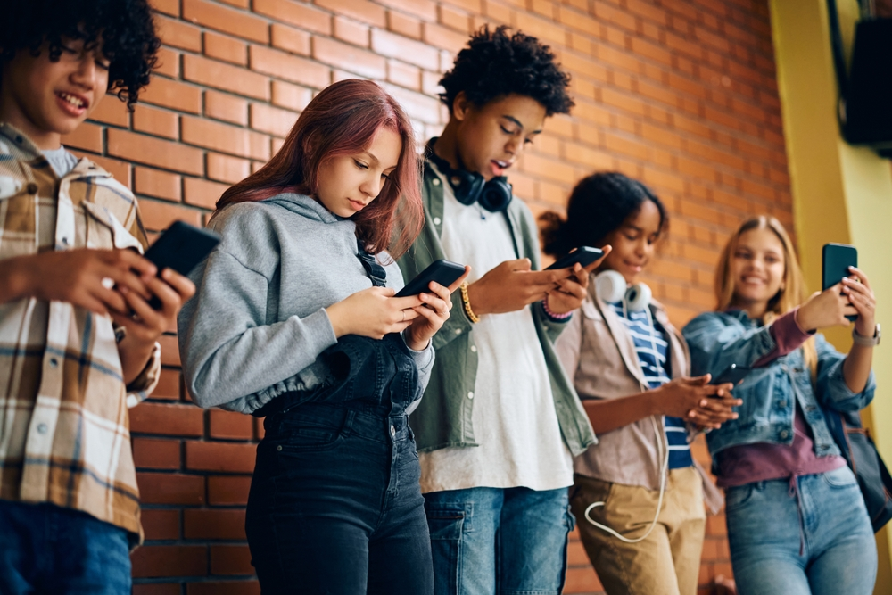
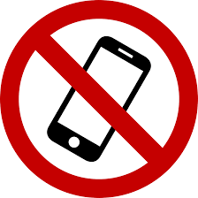

Na casa da Bruna e da Beatriz, o tempo de uso de tela é controlado. No máximo, três horas por dia. E nada de celular na escola.

"Eu tenho amigo, eu brinco, eu corro demais para ficar pensando em celular"
diz Bruna Marcelino de Almeida, de 14 anos.
"O celular, além de tirar atenção, eles não sabem o limite. Eles vão vendo, quando vê, já passou... passou o intervalo, ou, em casa, passou o tempo de tomar banho. Eles não sentem nem fome com o celular", comenta a dona de casa, Suely Marcelino.
Desde o começo do ano, uma lei proíbe o uso do celular nas escolas de todo o país durante a aula, o recreio e nos intervalos. Com exceção do uso para fins pedagógicos, com autorização do professor, ou em casos específicos, de alunos com deficiência ou com problemas de saúde.
Uma pesquisa do Instituto Equidade, em parceria com a Frente Parlamentar de Educação da Câmara dos Deputados, monitorou a aplicação da lei. Ouviu alunos do sexto ao nono ano do ensino fundamental e do ensino médio, além de professores e gestores.
51% dos alunos disseram que não levam mais o celular para a escola. Entre os que ainda levam, 33% por cento levam todos os dias, 7% quase todos os dias e 6% de vez em quando.
A pesquisa mostrou que um em cada seis estudantes admitiu que ainda usa o celular em sala de aula. Nas respostas, os principais motivos foram a necessidade de falar com a família, a vontade de conversar por mensagens e de usar redes sociais.
Em uma escola em Samambaia, a 30 quilômetros de Brasília, os alunos podem levar o celular, mas o aparelho tem que ficar desligado e dentro da mochila. Se o aluno precisar falar com os pais, por exemplo, a recomendação é procurar a orientadora educacional, que faz o contato com a família.
"Isso fez com que os alunos passassem a socializar mais, tivessem uma participação nas aulas muito maior. A interação durante as aulas tornou-se mais dinâmica, mais participativa. As notas dos educandos melhoraram consideravelmente", afirma Keila Espíndola.
"A gente já está dando um apoio às famílias, que é tirando o celular durante uma parte do dia dessas crianças e adolescentes pra que eles aproveitem a aula, aproveitem os colegas, aproveitem os professores. Uma regra que é construída por todo mundo é mais obedecida que uma regra imposta de cima pra baixo", analisa Israel Batista, conselheiro do CNE.

| Indicador | Antes da Proibição | Após a Proibição |
|---|---|---|
| Desempenho Acadêmico | Notas médias em queda ou estagnadas devido à distração. | Aumento de 6,4% nos resultados de testes (alunos de 16 anos). |
| Tempo de Concentração | O cérebro leva cerca de 23 minutos para retomar o foco após uma notificação. | Redução drástica do "custo de alternância" mental; foco contínuo. |
| Equidade Educacional | Alunos de baixa renda eram os mais prejudicados pelas distrações digitais. | Ganho de desempenho dobrado para alunos com dificuldades de aprendizagem. |
| Saúde Mental (Bullying) | 1 em cada 3 jovens relata ter sido vítima de cyberbullying no ambiente escolar. | relata ter sido vítima de cyberbullying no ambiente escolar. Redução significativa de conflitos digitais durante o horário letivo. |
| Atividade Física | Sedentarismo nos intervalos; uso de telas ocupava 80-90% do tempo livre. | Aumento na participação em atividades esportivas e recreativas físicas. |
Dados pegos no site:
g1.globo.com